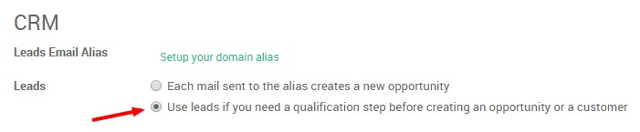

В Odoo CRM вы можете импортировать базу данных потенциальных клиентов, например, для "холодной" рассылки писем или для "холодного" обзвона, через CSV-файл. Вы можете выбрать более подходящий для себя вариант, импортировать контакты в виде лидов или возможностей. Выбор зависит от особенностей вашего бизнеса и ваших бизнес-процессов:
Некоторые компании могут решить пропускать этап лидов, а вместо этого сразу считать контакты непосредственно возможностями. Для некоторых компаний привлечение клиентов - всего лишь дополнительный шаг в процессе продаж. Вы могли бы назвать это расширенное (начало с лида) или упрощенное (начать с возможности) управление взаимоотношениями с клиентами.
Odoo позволяет выбрать один из этих подходов. Если ваша компания обрабатывает свои продажи с этапа предварительной квалификации, активируйте первый этап, как описано ниже, чтобы импортировать вашу базу данных в качестве лидов
Активация этапа лидов
По умолчанию начальный этап не активирован в Odoo CRM. Если вы хотите импортировать свои контакты в качестве лидов, а не в возможности, перейдите к , выберите опцию use leads if…, как показано ниже, и нажмите Применить.
Эта активация создаст новое подменю , из которого вы сможете импортировать ваши контакты с помощью кнопки Import (если вы хотите создать Лида вручную - смотрите здесь)

Импорт вашего файла CSV
В новом подменю , щелкните Import и выберите файл Excel для импорта нажав кнопку Выбрать файл. Убедитесь, что его расширение .csv и не забудьте установить правильные параметры формата файла (Кодирование и разделитель) в соответствии с данным файлом.
Примечание
Если ваша база данных потенциальных клиентов храниться в отличном от CSV формате, вы можете легко преобразовать ее в формат CSV с помощью Microsoft Excel, OpenOffice/LibreOffice Calc, Google Docs и т.д.

Выбор строк для импорта
Odoo автоматически сопоставляет заголовки столбцов из вашего CSV-файла в соответствующие поля, если вы отметите [UNKNOWN NODE problematic]Первая строка файла содержит метку параметра column [UNKNOWN NODE problematic]. Это упрощает импорт, особенно когда файл имеет много столбцов. Конечно, вы можете переназначить заголовки столбцов, чтобы указать поле, в которое вы импортируете данные (имя, фамилия, адрес электронной почты и т.д.).

Совет
Если вы хотите импортировать свои контакты в качестве возможностей, а не потенциальных клиентов, обязательно добавьте столбец Type в свой файл CSV. Этот столбец используется для указания, будет ли ваш импорт отмечен как Lead (type = Lead) или как возможность (type = Opportunity).
Нажмите кнопку Validate, если вы хотите, чтобы Odoo подтвердил, что перед импортом все корректно. В противном случае вы можете сразу нажать кнопку «Импорт»: будут выполнены те же проверки.
Примечание
Для получения дополнительной технической информации о том, как импортировать контакты в Odoo CRM, прочитайте раздел Часто задаваемые вопросы, расположенный ниже инструмента импорта в том же окне.